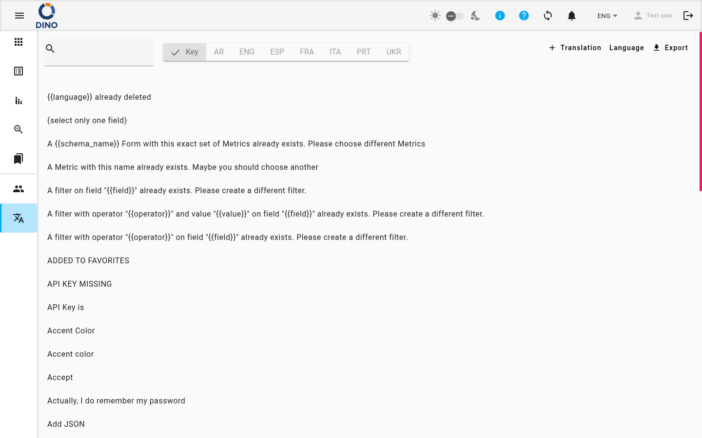

Gestione delle lingue
La pagina Lingue consente agli amministratori di gestire tutto il testo tradotto utilizzato in Dino. Da qui è possibile sfogliare, modificare e aggiungere traduzioni, gestire le lingue disponibili ed esportare file di traduzione per backup o modifiche.

Solo accesso amministratore
Quest'area è visibile solo agli utenti con il ruolo di Amministratore. Se non la vedi nella navigazione, contatta il tuo amministratore di sistema.
Sfogliare le traduzioni
La vista principale mostra un elenco di tutte le voci di traduzione. Ogni voce mostra la sua chiave — l'identificatore interno utilizzato dall'applicazione — e, quando è selezionata una lingua, il testo tradotto corrispondente.
Un indicatore di caricamento viene mostrato mentre i dati di traduzione vengono recuperati.
Filtrare l'elenco
Due controlli nella parte superiore della pagina consentono di restringere le voci visualizzate:
- Ricerca per parola chiave — digita una parola per filtrare le voci la cui chiave o traduzione contiene quel testo. L'elenco si aggiorna durante la digitazione.
- Selettore lingua — una riga di pulsanti mostra Chiave e un pulsante per ogni lingua disponibile. Fai clic sul nome di una lingua per visualizzare le sue traduzioni accanto a ciascuna chiave. Le voci senza traduzione per la lingua selezionata vengono mostrate come (Nessuna traduzione).
Modificare una voce di traduzione
- Fai clic su una qualsiasi voce nell'elenco per aprire la finestra Modifica traduzione.
- La finestra mostra la chiave e un campo di testo per ogni lingua disponibile.
- Aggiorna le traduzioni come necessario.
- Fai clic su Salva per applicare le modifiche, oppure su Annulla per chiudere senza salvare.
Da questa finestra puoi anche rimuovere permanentemente una singola voce facendo clic sul pulsante Rimuovi. Questa operazione elimina la chiave di traduzione e tutte le traduzioni associate.
Warning
La rimozione di una voce di traduzione è permanente. La chiave e tutti i suoi valori linguistici verranno eliminati.
Aggiungere una nuova voce di traduzione
Utilizza questa opzione quando devi aggiungere una chiave di traduzione che non esiste ancora nel sistema.
- Fai clic sul pulsante + Traduzione nella barra degli strumenti.
- Si apre la finestra Aggiungi traduzione. Contiene un campo di testo per ogni lingua attualmente attiva.
- Inserisci il testo della traduzione per ogni lingua secondo necessità.
- Fai clic su Salva per aggiungere la nuova voce, oppure su Annulla per annullare.
Un messaggio di conferma apparirà brevemente dopo che la voce è stata salvata.
Gestire le lingue
Utilizza questa opzione per aggiungere una nuova lingua, aggiornare le traduzioni di una lingua esistente o rimuovere un set di traduzioni personalizzate.
- Fai clic sul pulsante Lingua nella barra degli strumenti.
- Si apre la finestra Impostazioni lingua. Mostra un elenco di lingue disponibili e fornisce le seguenti azioni:
- Pulsante + per aggiungere una nuova lingua.
- Fai clic sul nome di una lingua nell'elenco per selezionarla e visualizzare un'anteprima delle sue traduzioni.
- Aggiorna traduzione (con una lingua selezionata) per caricare un nuovo file JSON.
- Rimuovi traduzione personalizzata per eliminare i dati di traduzione personalizzata per la lingua selezionata.
Aggiungere una nuova lingua
- Fai clic sul pulsante + nella parte superiore della finestra.
- Apparirà un modulo che richiede un'etichetta lingua (il nome che apparirà nell'interfaccia, ad esempio "Francese" o "fr").
- Facoltativamente, carica un file di traduzione JSON facendo clic su Aggiungi JSON e selezionando un file dal tuo dispositivo. Il contenuto del file verrà visualizzato in anteprima prima del salvataggio.
- Fai clic su Salva per aggiungere la lingua, oppure su Annulla per annullare.
Visualizzare una lingua esistente
Fai clic sul pulsante del nome di una lingua per selezionarla. La finestra mostrerà un'anteprima di tutte le chiavi di traduzione e i valori attualmente memorizzati per quella lingua.
Aggiornare le traduzioni di una lingua
Con una lingua selezionata, fai clic su Aggiorna traduzione per caricare un nuovo file JSON. La finestra mostrerà un'anteprima delle modifiche — nuove chiavi aggiunte e chiavi modificate — prima di salvare.
- Fai clic su Aggiorna traduzione e seleziona un file JSON dal tuo dispositivo.
- Rivedi l'anteprima che mostra le righe aggiunte e modificate.
- Fai clic su Salva per applicare l'aggiornamento, oppure su Annulla per annullare.
Rimuovere una traduzione personalizzata
Con una lingua selezionata, fai clic su Rimuovi traduzione personalizzata per eliminare i dati di traduzione personalizzata per quella lingua.
Warning
Questa operazione rimuove le traduzioni personalizzate per la lingua selezionata. La lingua stessa potrebbe rimanere nel sistema, ma il suo contenuto personalizzato andrà perso.
Esportare le traduzioni
Puoi scaricare i dati di traduzione per qualsiasi lingua come file JSON.
- Fai clic sul pulsante Esporta (icona di download) nella barra degli strumenti.
- Si apre la finestra Esporta che mostra un elenco di lingue disponibili.
- Fai clic sul nome della lingua che desideri esportare. Un'anteprima dei suoi dati di traduzione apparirà a destra.
- Fai clic su Scarica per salvare il file sul tuo dispositivo.